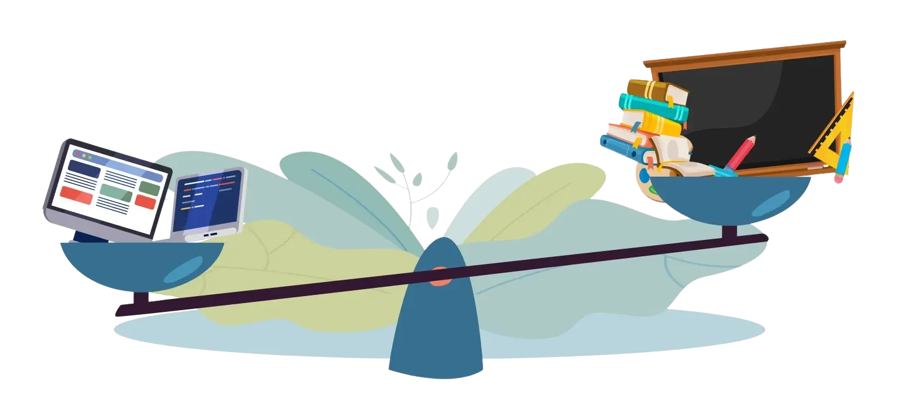

References
-
Alawamleh, M., Al-Twait, L. M., & Al-Saht, G. R. (2020). The effect of online learning on communication between instructors and students during Covid-19 pandemic.
https://www.emerald.com/insight/content/doi/10.1108/AEDS-06-2020-0131/full/html-Why
-
Allen, I. E., & Seaman, J. (2017). Digital Compass Learning: Distance Education Enrollment Report 2017. Babson survey research group.
https://onlinelearningsurvey.com/reports/digtiallearningcompassenrollment2017.pdf
-
Herdian, H., Mildaeni, I. N., & Wahidah, F. R. (2021). “There are always ways to cheat” academic dishonesty strategies during online learning. Journal of Learning Theory and Methodology.
https://ltmjournal.com/e/article/view/18/17
-
online learning is more efficient and cost-effective than alternatives. (2020, March 13). Gamelearn: Game-Based Learning Courses for Soft Skills Training.
https://www.game-learn.com/en/resources/blog/why-online-learning-is-profitable-and-efficient-for-companies/
-
Purwanto, A. (2020). University students online learning system during Covid-19 pandemic: Advantages, constraints and solutions.
https://papers.ssrn.com/sol3/papers.cfm?abstract_id=3986850
-
Advantages and Disadvantages of Online Learning. (n.d.). Edoxi Training Institute. Retrieved June 6, 2023
https://www.edoxi.com/studyhub-detail/advantages-and-disadvantages-of-online-learning/
Made 30 May 2023
by Group 0221.